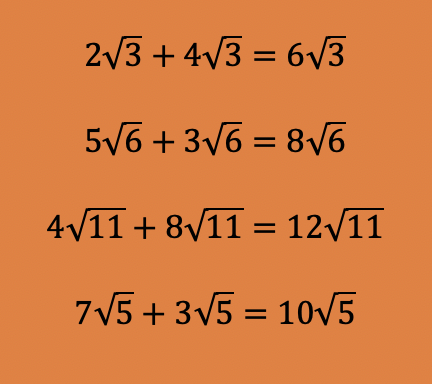
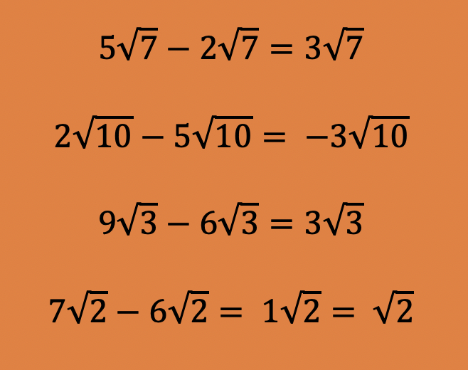
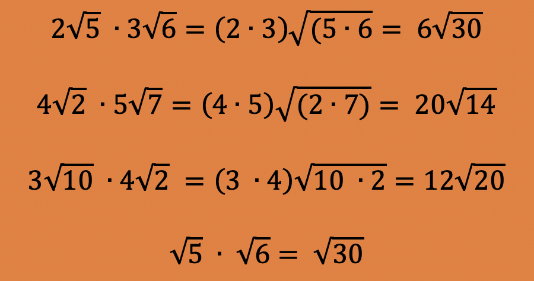
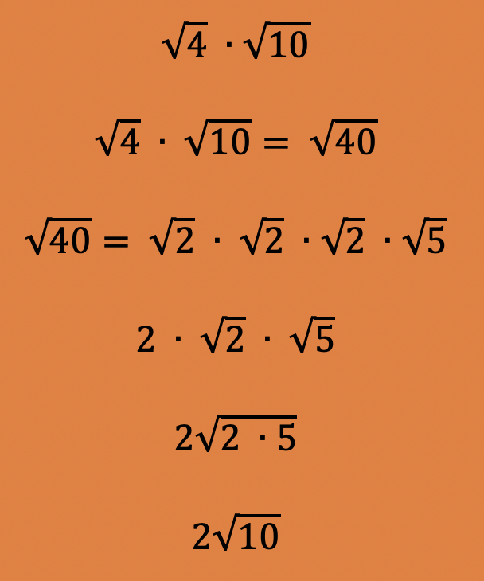
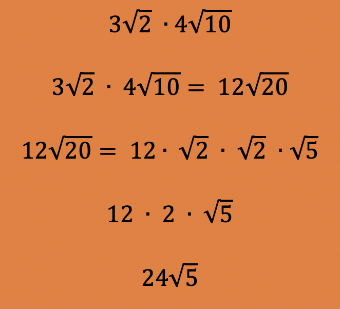

In this module you will learn how to add, subtract and multiply radical expressions.
Prior to starting this module you should review the basics of square roots: Review of Square Roots
A Radical Expression is an expression that contains the square root symbol in it. It becomes necessary to be able to add, subtract, and multiply square roots.
When adding and subtracting square roots, the rules for combining like terms is involved.
Vocabulary: Please memorize these three terms. It will make your life much easier as we go through the information.
Adding Radicals
To add two square roots, they must have the same radicand. If so, then you add the coefficients and leave the radicand the same.
For example:

As you can see, it is pretty easy to add square roots.
Subtracting Radicals
To subtract two square roots, they must have the same radicand. If so, then you subtract the coefficients and leave the radicand the same.
For example:

As you can see, it is pretty easy to subtract square roots.
Multiplying Radicals
To multiply square roots, multiply the coefficients together to make the answer's coefficient. Then multiply the two radicands together to get the answer's radicand. Simplify the radicand if possible prior to stating your answer.
For example:

Additional Addition and Subtraction Examples
When performing addition or subtraction, if the radicands are different, you must try to simplify each radicand before you can add or subtract. So while at first a problem does not look like it can be added or subtracted, after simplifying it can be.
Example:
5√20 + 4√5 they can't be added because their radicands are different. But if you simplify the first term they will be able to be added.
Solution:
5√20 = 10√5
Therefore, 10√5 + 4√5 = 14√5 *Answer
Do the same thing if the problem is subtraction. Simplify the radicands first before subtracting as we did above.
Additional Multiplication Examples
Now this all seems quite easy, just because I wanted you to see the pattern. But when you operate with square roots, you must make sure the radicand is simplified by using a Factor Tree and looking for pairs of factors. (Since the square root of any number times by itself, simplifies to the number.)
Recall: √a x √a = a
Example:

Example:
